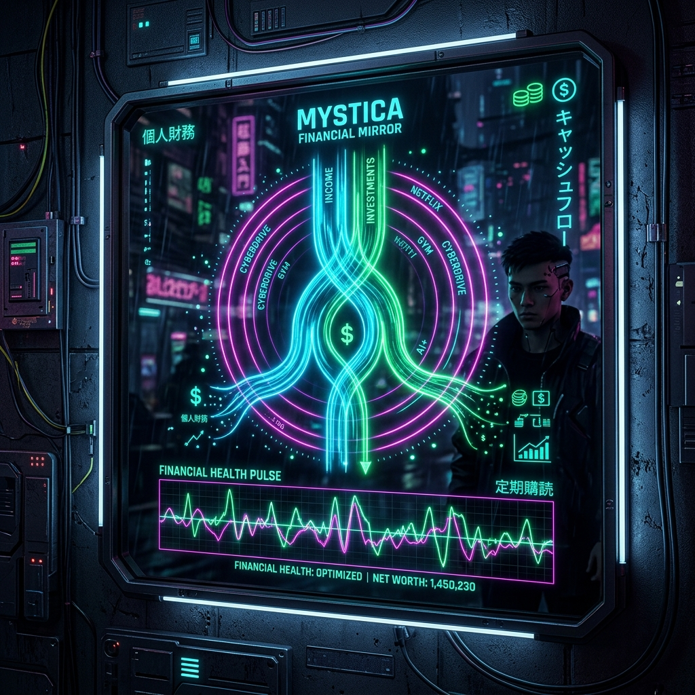

Money Mirror is a local-first personal finance intelligence app designed for people who want deep visibility into where their money actually goes without linking bank logins to cloud aggregators like Plaid. Users drop in any checking or credit-card CSV export; Money Mirror normalizes merchant names, detects recurring subscriptions and stealth price increases, highlights unusual spend spikes, and answers natural-language questions against deterministic Python aggregates.
Traditional budgeting apps fail because they either demand invasive cloud bank credentials or overwhelm users with accounting spreadsheets. Money Mirror separates deterministic transaction math (cadence clustering, merchant normalization, and anomaly deltas) from plain-language narrative synthesis—delivering instant, private financial clarity from a simple CSV file.